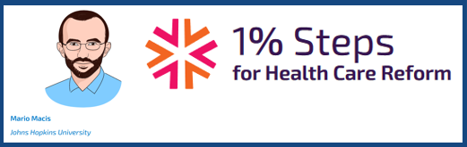
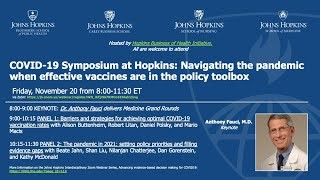
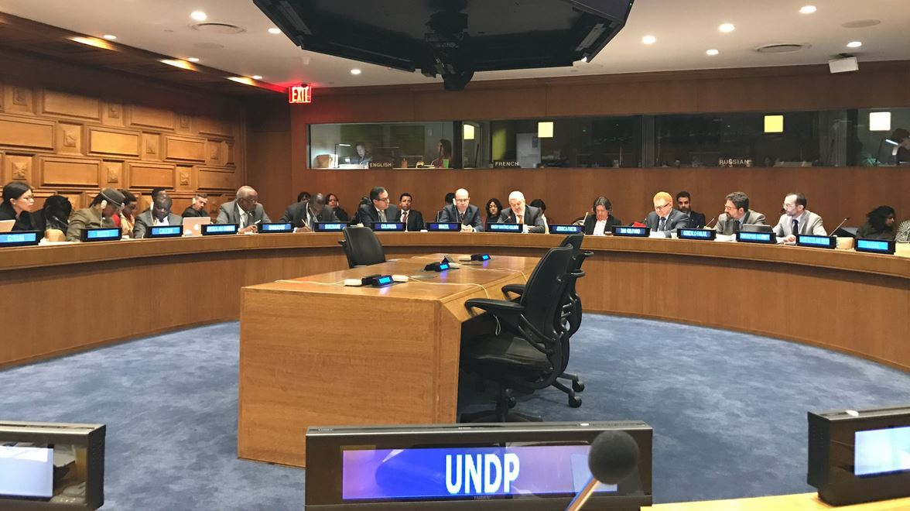

Mario Macis
Professor of Economics and Management, Johns Hopkins Carey Business School
Core Faculty, Hopkins Business of Health Initiative
Affiliate Faculty, Johns Hopkins Berman Institute of Bioethics
Research Associate, National Bureau of Economic Research (NBER)
Research Fellow, Institute of Labor Economics (IZA)
Associate Researcher, Center for Economic Research North-South (CRENoS)
I am an applied economist and my work focuses on how economic incentives interact with psychological factors and social norms to drive individual behavior and policy-relevant outcomes. In particular, I study the role of incentives in shaping pro-social behavior, and attitudes toward morally contentious exchanges. Recently, these two lines of work converged into a research agenda aimed at understanding what determines social support for market-based solutions to social problems.
I am also interested in various topics in health, development, labor and organizational economics. These topics include gender discrimination in the labor market, the role of incentives, behavioral interventions and social networks in addressing the under-detection of infectious diseases, and the adoption of efficient management practices in health care organizations.
Much of my work has implications for organizational and public policy. I have been a consultant for the World Bank, the International Labor Organization, the National Marrow Donor Program, and the United Nations Development Program.
I currently serve on a National Academies of Sciences, Engineering and Medicine committee on A Fairier and More Equitable, Cost-Effective, and Transparent System of Donor Organ Procurement, Allocation, and Distribution.
Occasionally, I write Op-eds for La Nuova Sardegna (in Italian).
Before joining Hopkins, I was a faculty member at the University of Michigan, Ross School of Business. I received my PhD in Economics from the University of Chicago, Department of Economics.
Recent Research
Peer Messaging to Reduce Covid-19 Transmission in Zambia (with Jessica Goldberg, Alfredo Burlando, Pradeep Chintagunta, Melissa Graboyes, Peter Hangoma, Dean Karlan, Silvia Prina). In progress.
Social support for markets in health and health care in Canada and the US: Insights from the Covid-19 Pandemic (with Julio Elias and Nicola Lacetera). In progress. Funding: Hopkins Business of Health Initiative.
Incentivized peer referrals for tuberculosis screening: evidence from India (with Jessica Goldberg and Pradeep Chintagunta). NBER Working Paper N. 25279. Revise & Resubmit, American Economic Journal: Applied Economics.
Paying for Kidneys? A Randomized Survey and Choice Experiment (with Julio Elias and Nicola Lacetera). American Economic Review, 2019, 109(8).
Updates
HU-LSE conference on Experimental Insights from Behavioral Economics on Covid-19 (February 12 and 19, 2021)

1% Steps for Health Care Reform: Removing all financial disincentives to living kidney donation

COVID-19 Symposium at Hopkins: Navigating the Pandemic when effective vaccine is in the toolbox, November 20, 2020

At the United Nations headquarters, for the presentation of the report: "Socio-Economic Costs of the Zika Virus", April 6, 2017
